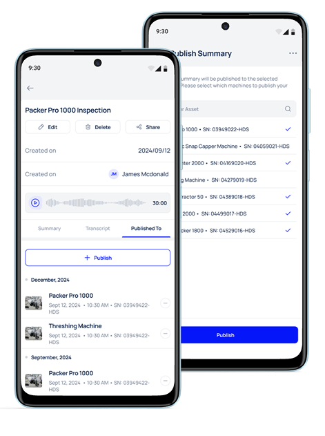
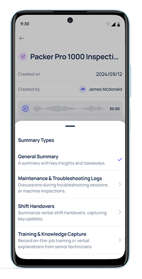
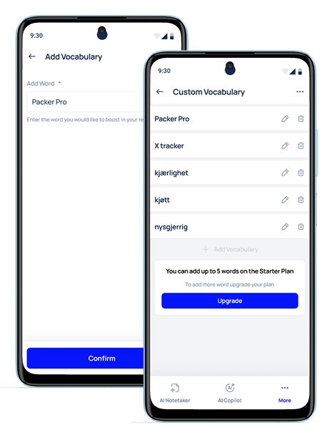
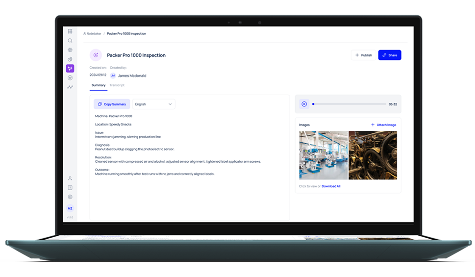

Makula - AI Notetaker
Company:
Makula
Role:
Product Designer
Year:
2024-2025
Team:
Saman Farooq, Gohar Nadeem (Product Team), Shahzaib Ali(Sr. Product Designer)

Makula is SaaS platform that allows OEMs to track work orders, machines, and facilities.
While making facility visits, service technicians had to document their findings manually which created reporting delays and information gaps for line managers.
Service Technician's Journey
| Stage | Before Visit | Arrival & Setup | During Visit | End of Visit | Documentation |
|---|---|---|---|---|---|
| Objective | Find work orders for the day's visit, Review machine history & previous service notes. | Confirm machine/equipment to be serviced, Take machine history from facility team. | Diagnose the problem, Perform repairs or maintenance. | Confirm work is complete. | Write visit report,Share with manager, Share with facility. |
| Pain Points | Searching for logs or context on the previous visit. | Lack of stable Internet connection, Important info missed or forgotten. | Visit interruptions, Difficulty in notation or photography while repairing. | Manual notation, Inconsistent reports & structure, Missing information. | Incomplete/Delayed reports, Separated reports & work orders, Documentation not centralised |
Publishing Notes to Assets
Linked documentation to a core part of the platform operational record.


Summary Types
Developed pre-structured outputs for key tasks and visit types, saving time & improving consistency.
Image Capture in Notes
Allowed technicians to attach evidence and details to generated summaries.


Custom Vocabulary
Enabled admins to define domain-specific terminology to improve transcription quality.
Users reported reduced time spent on documentation of facility visits.
This was a strong enough signal to inform a product decision, giving all users 30 minutes of free transcription.
